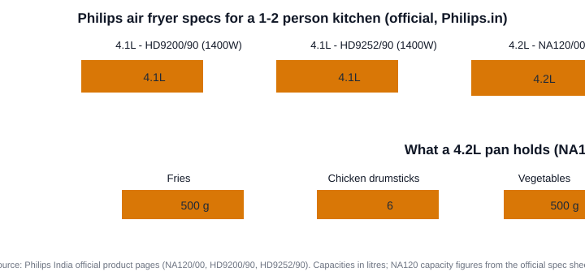

Best Air Fryer for 2 People in India (2026): Which 4L Philips Fits a Couple
The short version
TL;DR: For two people, don't overthink capacity - a Philips NA120/00 4.2L is the best all-round pick: at 1500W and 12 cooking modes it crisps a single-serving batch of fries or a full meal for two, and it's the least expensive of the three verified Philips models here (around ₹4,600 plus any Tata CLiQ discount; up to 3.75% cashback via the affiliate link). A 4.1-4.2L fryer is the sweet spot for couples - it fits a couple's portions, batch-cooks leftovers, and reheats without crowding the basket. If your kitchen is tiny, the cheaper HD9200/90 4.1L does the same job at 1400W.Last updated: 2026-08-14. Capacities, wattage and feature specs verified against official Philips India product pages.
What size air fryer do two people actually need in India?
Shortest honest answer: 2 to 4.2 litres, and for most couples the 4L class is the right call. A 2L air fryer is genuinely fine for a single serving of fries or one piece of fish, but it's cramped the moment you want vegetables on the side or a second batch. Air fryers cook by circulating hot air, and crowded food comes out uneven - there's a hard physical limit on how much you can stack.
The flip side is that a 6L+ family fryer is wasted on two people: it takes longer to heat up, guzzles more counter space, and unless you batch-cook, you end up cooking small loads in a big basket anyway. A 4-4.2L model splits the difference - enough for a proper meal for two, small enough to heat quickly.
Can a 4.1L or 4.2L Philips still work for one person?
Yes, and this is the reason 4L-class fryers sell so well. On the official Philips spec sheet, the 4.2L NA120 holds about 500 g of fries, 500 g of vegetables, or 6 chicken drumsticks. For a solo cook that's dinner plus leftovers. For a couple it's a real portion each, or one batch of side + one batch of main if you run them back to back.

Batch cooking is where a 4L fryer earns its keep for two people: roast a tray of paneer or chicken once, and you've got protein for two or three dinners. Reheat also beats the microwave for anything you want crisp - parathas, samosas, yesterday's fries come back crunchy, not soggy.
Which Philips air fryer is best for 2 people in India?
All three verified models below sit in the 4.1-4.2L range, so the difference between them is features and wattage, not portion size. Here's how they stack up (all specs from official Philips India pages):
| Model | Capacity | Wattage | Standout feature | Best for |
|---|---|---|---|---|
| Philips NA120/00 | 4.2L | 1500W | 12 cooking modes, 2-yr warranty | Best all-round value for couples |
| Philips HD9200/90 | 4.1L | 1400W | 60-min timer, QuickClean basket | Good if NA120 is out of stock |
| Philips HD9252/90 Essential | 4.1L | 1400W | Keep Warm mode | Slow eaters who want food held warm |
Pricing on Tata CLiQ moves with sales, so check the live price on each product page before you buy (links above go straight to each model). Based on official pricing patterns, the NA120/00 generally lands below the two 3000-Series models.
Should you pick the Philips NA120/00 for two people?
When does the Philips HD9200/90 make more sense?
What about the Philips Essential HD9252/90?
Can you get a smaller (2L) air fryer on Tata CLiQ?
Honest caveat: the verified, in-stock Philips options on Tata CLiQ right now are the three 4.1-4.2L models above. Dedicated 2-2.4L "single-serving" fryers do exist from other brands, but I couldn't verify a current Tata CLiQ listing for one at the time of writing, and linking a product I haven't confirmed is live would be sloppy. If counter space is genuinely at a premium, a 4.1L model is still a reasonable compromise - it's not huge, and it lets you batch-cook. Size matters less than airflow; a couple cooking from the 4L class will realistically use it far more than a 2L fryer they outgrow.
What to check before buying an air fryer for two
- Capacity 4-4.2L unless you cook single servings almost exclusively - it fits real portions and batch-cooks.
- Wattage ~1400-1500W is standard; a 1500W model heats up a touch faster than 1400W but the difference isn't dramatic.
- Dishwasher-safe basket if you hate hand-washing - all three models here officially support it.
- Warranty matters; the NA120 carries a 2-year warranty on the official sheet.
- Check the live price on the purchase day - air fryer pricing changes with sales.
FAQ
Is a 4.2L air fryer too big for two people?
No - 4-4.2L is the ideal middle ground. It holds about 500 g of fries or 6 drumsticks (official NA120 spec), which is a proper meal for two, and it reheats without crowding the basket.
Should I buy a 2L air fryer for a single or couple?
A 2L fryer works for strictly single servings, but most couples find it limiting fast. A 4L-class model is barely larger on the counter and handles batch cooking and reheating far better - the reason it's the more sensible default.
How much electricity does a 4.2L air fryer use?
At full power a 1400-1500W fryer draws about 1.4-1.5 kWh per hour of use (per the wattage on the spec sheets). A typical 20-minute session works out to a few rupees at standard Indian tariffs, and Philips positions air frying as up to ~50% faster and ~70% more energy-efficient than a conventional oven.
Can a Philips air fryer cook Indian food?
Yes - samosas, pakoras, roasted chana, tawa paneer and reheating parathas all work well. It won't replace a kadhai for deep-frying, but most "crispy" cravings come out with a fraction of the oil.
Which is cheaper on Tata CLiQ, the NA120 or the HD9200?
Pricing moves with sales, so the gap changes week to week. The NA120/00 is generally the lower-priced option as a 1000-series model; check both product pages on the day you buy.
Bottom line
For two people, skip the tiny 2L fryers and the family-size 6L tanks. A Philips NA120/00 (4.2L) gives you the best features for the price, and the HD9200/90 (4.1L) is a solid twin if the NA120 is unavailable. All specs verified against official Philips India pages and links confirmed live on Tata CLiQ, where you can earn up to 3.75% cashback through this site.